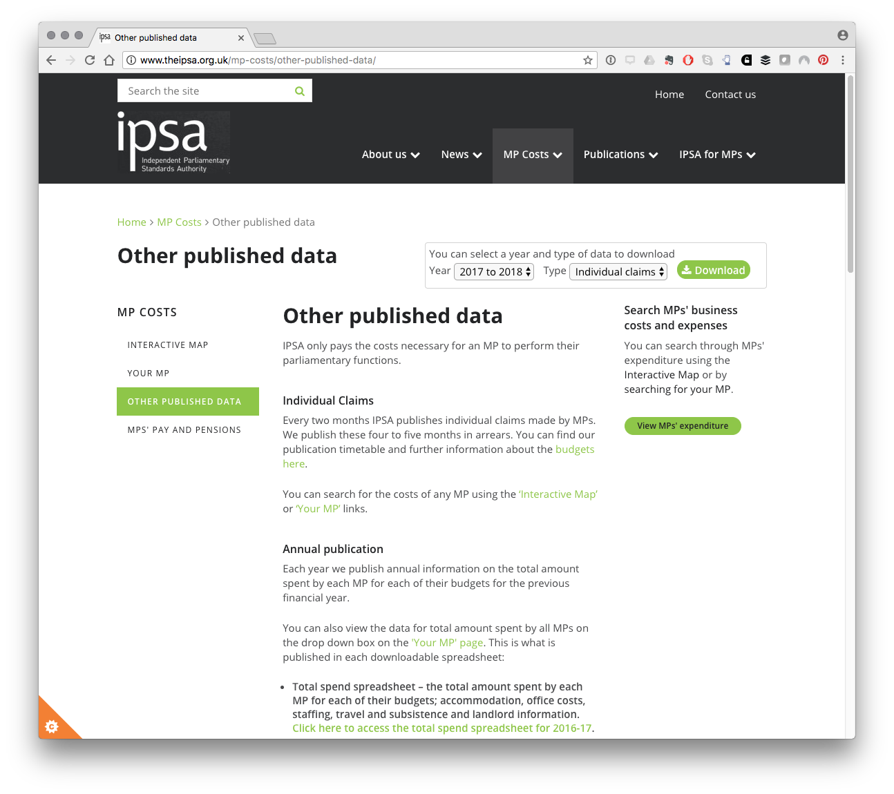

The ipsar Package
This R data package provides access to the expenses claim data for UK Members of Parliament from the Independent Parliamentary Standards Authority (IPSA).
ipsar aims to do two things:
- Make MPs expenses data available in one table.
- Build a bridge between the IPSA expenses data and the
data.parliamentMembers’ Name Data Platform through themnisR package by Evan Odell.
The package provides access to MPs raw expenses data for over 1.4 million expenses claims between May 2010 and the end of March 2018 (latest data). The package also links the IPSA expenses claims data with the data.parliament Members' Name Data Platform API service through MP standard IDs (member_id). The package aims to assist researchers interested in combining MPs expenses data with data.parliament data.
ipsar is an independent data package based on public data and is not associated with, supported or endorsed by the Independent Parliamentary Standards Authority (IPSA).
The IPSA Expenses Data
The Independent Parliamentary Standards Authority has made data on MPs expenses available since May the 7th 2010, the day after the 2010 General Election. No data is available prior to May 7th 2010. IPSA expenses data is organised by UK financial years (1st of April to 31st of March).
Raw expenses data for individual members is presently available as a set of .csv downloads from the IPSA website at http://www.theipsa.org.uk/mp-costs/other-published-data/ and by selecting the dropdown for Individual Claims for the financial year. The image below displays the drop down for accessing the raw individual financial year records from IPSA. For information on new releases follow IPSA on Twitter at ipsaUK.

For individual constituencies you can use the search tool or map on the IPSA website. A website called MP Expenses Info also provides access to MP expenses data by individual MPs and in summary form but does not provide access to the underlying raw data. If you are just looking for information about your MP or a quick overview then these sites are probably a better source of information.
New data is made available every two months and has a delay of three months.1 At the time of writing in early September 2018, the complete data for the 2017 to 2018 financial year had recently become available. The package thus provides time series data for financial years from May 2010 to the end of March 2018.
Installing ipsar
ipsar is not on CRAN as it contains some large files but can be installed from Github. To install it you will need devtools.
ipsar functions
ipsar contains two simple convenience functions for loading the data into your global environment.
| ipsa_name | mps_name | dp_name | member_id | current_role | commons_short | year | date | claim_no | mps_constituency | category | expense_type | short_description | details | journey_type | from | to | travel | nights | mileage | amount_claimed | amount_paid | amount_not_paid | amount_repaid | status | reason_if_not_paid | last_download |
|---|---|---|---|---|---|---|---|---|---|---|---|---|---|---|---|---|---|---|---|---|---|---|---|---|---|---|
| Adam Afriyie | Adam Afriyie | Adam Afriyie | 1586 | MP | Adam Afriyie | 10_11 | 2011-03-31 | n/a | Windsor CC | Staffing | Payroll | Total payroll costs for the 2010-11 year | Total payroll costs for the 2010-11 year | NA | NA | NA | NA | NA | NA | 68686.91 | 68686.91 | 0 | 0 | Paid | NA | 2018-09-01 |
| Adam Afriyie | Adam Afriyie | Adam Afriyie | 1586 | MP | Adam Afriyie | 11_12 | 2012-03-31 | n/a | Windsor CC | Staffing | Payroll | Total payroll costs for the 2011-12 year | Total payroll costs for the 2011-12 year | NA | NA | NA | NA | NA | NA | 69852.96 | 69852.96 | 0 | 0 | Paid | NA | 2018-09-01 |
| Adam Afriyie | Adam Afriyie | Adam Afriyie | 1586 | MP | Adam Afriyie | 12_13 | 2012-08-09 | Payment to Supplier | Windsor CC | Office Costs | Legal Expenses Insurance | EPL | EPL insurance | NA | NA | NA | NA | NA | NA | 604.20 | 604.20 | 0 | 0 | Paid | NA | 2018-09-01 |
| Adam Afriyie | Adam Afriyie | Adam Afriyie | 1586 | MP | Adam Afriyie | 12_13 | 2013-03-31 | n/a | Windsor CC | Staffing | Payroll | Total payroll costs for the 2012-13 year | Total payroll costs for the 2012-13 year | NA | NA | NA | NA | NA | NA | 71345.27 | 71345.27 | 0 | 0 | Paid | NA | 2018-09-01 |
| Adam Afriyie | Adam Afriyie | Adam Afriyie | 1586 | MP | Adam Afriyie | 13_14 | 2013-08-09 | Payment to Supplier | Windsor CC | Office Costs | Legal Expenses Insurance | EPL | NA | NA | NA | NA | NA | NA | NA | 577.70 | 577.70 | 0 | 0 | Paid | NA | 2018-09-01 |
| Adam Afriyie | Adam Afriyie | Adam Afriyie | 1586 | MP | Adam Afriyie | 13_14 | 2014-03-31 | n/a | Windsor CC | Staffing | Payroll | Total payroll costs for the 2013-14 year | Total payroll costs for the 2013-14 year | NA | NA | NA | NA | NA | NA | 89343.39 | 89343.39 | 0 | 0 | Paid | NA | 2018-09-01 |
This might take a few moments as it is a compressed file.
The concordance table between IPSA and data.parliament for MPs and former MPs is called ipsa_commons and can be loaded using:
| mps_name | mps_constituency | commons_short | lords | active_mp | member_id | dods_id | pims_id | clerks_id | display_as | list_as | full_title | laying_minister_name | date_of_birth | date_of_death | gender | house | member_from | house_start_date | house_end_date | party_id | party_text | current_status_id | current_status_is_active | current_status_name | current_status_reason | current_status_start_date | house_membership | ipsa_match | current_role | ipsa_name | dp_name |
|---|---|---|---|---|---|---|---|---|---|---|---|---|---|---|---|---|---|---|---|---|---|---|---|---|---|---|---|---|---|---|---|
| Adam Afriyie | Windsor CC | Adam Afriyie | FALSE | TRUE | 1586 | 35516 | 4734 | 908 | Adam Afriyie | Afriyie, Adam | Adam Afriyie MP | NA | -139194000 | NA | M | Commons | Windsor | 1115247600 | NA | 4 | Conservative | 0 | True | Current Member | NA | 1496876400 | list(House = “Commons”, StartDate = “2005-05-05T00:00:00”, EndDate = list(@xsi:nil = “true”, @xmlns:xsi = “http://www.w3.org/2001/XMLSchema-instance”), EndReason = NULL, EndNotes = NULL) |
TRUE | MP | Adam Afriyie | Adam Afriyie |
| Adam Holloway | Gravesham CC | Adam Holloway | FALSE | TRUE | 1522 | 35356 | 4766 | 843 | Adam Holloway | Holloway, Adam | Adam Holloway MP | NA | -139712400 | NA | M | Commons | Gravesham | 1115247600 | NA | 4 | Conservative | 0 | True | Current Member | NA | 1496876400 | list(House = “Commons”, StartDate = “2005-05-05T00:00:00”, EndDate = list(@xsi:nil = “true”, @xmlns:xsi = “http://www.w3.org/2001/XMLSchema-instance”), EndReason = NULL, EndNotes = NULL) |
TRUE | MP | Adam Holloway | Adam Holloway |
| Adrian Bailey | West Bromwich West BC | Adrian Bailey | FALSE | TRUE | 320 | 25800 | 3848 | 22 | Mr Adrian Bailey | Bailey, Mr Adrian | Mr Adrian Bailey MP | NA | -759196800 | NA | M | Commons | West Bromwich West | 974937600 | NA | 15 | Labour (Co-op) | 0 | True | Current Member | NA | 1496876400 | list(House = “Commons”, StartDate = “2000-11-23T00:00:00”, EndDate = list(@xsi:nil = “true”, @xmlns:xsi = “http://www.w3.org/2001/XMLSchema-instance”), EndReason = NULL, EndNotes = NULL) |
TRUE | MP | Adrian Bailey | Mr Adrian Bailey |
| Adrian Sanders | Torbay BC | Adrian Sanders | FALSE | FALSE | 237 | 25377 | 546 | 523 | Mr Adrian Sanders | Sanders, Mr Adrian | Mr Adrian Sanders | NA | -337309200 | NA | M | Commons | Torbay | 862441200 | 16524 | 17 | Liberal Democrat | False | NA | NA | NA | list(House = “Commons”, StartDate = “1997-05-01T00:00:00”, EndDate = “2015-03-30T00:00:00”, EndReason = “Defeated”, EndNotes = NULL) | TRUE | Ex | Adrian Sanders | Mr Adrian Sanders | |
| Afzal Khan | Manchester, Gorton BC | Afzal Khan | FALSE | TRUE | 4671 | 107134 | 6234 | 1486 | Afzal Khan | Khan, Afzal | Afzal Khan MP | NA | -370569600 | NA | M | Commons | Manchester, Gorton | 1496876400 | NA | 15 | Labour | 0 | True | Current Member | NA | 1496876400 | list(House = “Commons”, StartDate = “2017-06-08T00:00:00”, EndDate = list(@xsi:nil = “true”, @xmlns:xsi = “http://www.w3.org/2001/XMLSchema-instance”), EndReason = NULL, EndNotes = NULL) |
TRUE | MP | Afzal Khan | Afzal Khan |
| Aidan Burley | Cannock Chase CC | Aidan Burley | FALSE | FALSE | 3937 | 72840 | 5528 | 1029 | Mr Aidan Burley | Burley, Mr Aidan | Mr Aidan Burley | NA | 285811200 | NA | M | Commons | Cannock Chase | 1273100400 | 16524 | 4 | Conservative | False | NA | NA | NA | list(House = “Commons”, StartDate = “2010-05-06T00:00:00”, EndDate = “2015-03-30T00:00:00”, EndReason = “Retired”, EndNotes = “Dissolution of Parliament”) | TRUE | Ex | Aidan Burley | Mr Aidan Burley |
This table covers 950 existing and former Members of Parliament. It is important to know that:
-
display_asis the preferreddata.parliamentsystem name and is duplicated asdp_name -
mps_nameis the name used by IPSA for recording MPs expenses and is duplicated asipsa_name -
commons_shortis the name used for matching between the two sources as described in the vignette
The key field for the data.parliament service is the member_id.
Historic Data
An effort has been made to preserve the records for MPs who leave the House of Commons and those who move to the House of Lords to assist with historical research. This information is recorded in the supplementary column current_role as either MP, Lords or Ex. For everyday use you will normally want to drop the Ex and Lords entries. To filter only to current MPs in the ipsa_commons concordance table use:
library(tidyverse)
ipsa_commons %>%
dplyr::filter(current_role == "MP") %>%
head() %>%
knitr::kable()| mps_name | mps_constituency | commons_short | lords | active_mp | member_id | dods_id | pims_id | clerks_id | display_as | list_as | full_title | laying_minister_name | date_of_birth | date_of_death | gender | house | member_from | house_start_date | house_end_date | party_id | party_text | current_status_id | current_status_is_active | current_status_name | current_status_reason | current_status_start_date | house_membership | ipsa_match | current_role | ipsa_name | dp_name |
|---|---|---|---|---|---|---|---|---|---|---|---|---|---|---|---|---|---|---|---|---|---|---|---|---|---|---|---|---|---|---|---|
| Adam Afriyie | Windsor CC | Adam Afriyie | FALSE | TRUE | 1586 | 35516 | 4734 | 908 | Adam Afriyie | Afriyie, Adam | Adam Afriyie MP | NA | -139194000 | NA | M | Commons | Windsor | 1115247600 | NA | 4 | Conservative | 0 | True | Current Member | NA | 1496876400 | list(House = “Commons”, StartDate = “2005-05-05T00:00:00”, EndDate = list(@xsi:nil = “true”, @xmlns:xsi = “http://www.w3.org/2001/XMLSchema-instance”), EndReason = NULL, EndNotes = NULL) |
TRUE | MP | Adam Afriyie | Adam Afriyie |
| Adam Holloway | Gravesham CC | Adam Holloway | FALSE | TRUE | 1522 | 35356 | 4766 | 843 | Adam Holloway | Holloway, Adam | Adam Holloway MP | NA | -139712400 | NA | M | Commons | Gravesham | 1115247600 | NA | 4 | Conservative | 0 | True | Current Member | NA | 1496876400 | list(House = “Commons”, StartDate = “2005-05-05T00:00:00”, EndDate = list(@xsi:nil = “true”, @xmlns:xsi = “http://www.w3.org/2001/XMLSchema-instance”), EndReason = NULL, EndNotes = NULL) |
TRUE | MP | Adam Holloway | Adam Holloway |
| Adrian Bailey | West Bromwich West BC | Adrian Bailey | FALSE | TRUE | 320 | 25800 | 3848 | 22 | Mr Adrian Bailey | Bailey, Mr Adrian | Mr Adrian Bailey MP | NA | -759196800 | NA | M | Commons | West Bromwich West | 974937600 | NA | 15 | Labour (Co-op) | 0 | True | Current Member | NA | 1496876400 | list(House = “Commons”, StartDate = “2000-11-23T00:00:00”, EndDate = list(@xsi:nil = “true”, @xmlns:xsi = “http://www.w3.org/2001/XMLSchema-instance”), EndReason = NULL, EndNotes = NULL) |
TRUE | MP | Adrian Bailey | Mr Adrian Bailey |
| Afzal Khan | Manchester, Gorton BC | Afzal Khan | FALSE | TRUE | 4671 | 107134 | 6234 | 1486 | Afzal Khan | Khan, Afzal | Afzal Khan MP | NA | -370569600 | NA | M | Commons | Manchester, Gorton | 1496876400 | NA | 15 | Labour | 0 | True | Current Member | NA | 1496876400 | list(House = “Commons”, StartDate = “2017-06-08T00:00:00”, EndDate = list(@xsi:nil = “true”, @xmlns:xsi = “http://www.w3.org/2001/XMLSchema-instance”), EndReason = NULL, EndNotes = NULL) |
TRUE | MP | Afzal Khan | Afzal Khan |
| Alan Brown | Kilmarnock and Loudoun CC | Alan Brown | FALSE | TRUE | 4470 | 122026 | 6027 | 1270 | Alan Brown | Brown, Alan | Alan Brown MP | NA | 19263600 | NA | M | Commons | Kilmarnock and Loudoun | 1430953200 | NA | 29 | Scottish National Party | 0 | True | Current Member | NA | 1496876400 | list(House = “Commons”, StartDate = “2015-05-07T00:00:00”, EndDate = list(@xsi:nil = “true”, @xmlns:xsi = “http://www.w3.org/2001/XMLSchema-instance”), EndReason = NULL, EndNotes = NULL) |
TRUE | MP | Alan Brown | Alan Brown |
| Alan Campbell | Tynemouth BC | Alan Campbell | FALSE | TRUE | 529 | 25786 | 2445 | 93 | Mr Alan Campbell | Campbell, Mr Alan | Rt Hon Alan Campbell MP | NA | -393987600 | NA | M | Commons | Tynemouth | 862441200 | NA | 15 | Labour | 0 | True | Current Member | NA | 1496876400 | list(House = “Commons”, StartDate = “1997-05-01T00:00:00”, EndDate = list(@xsi:nil = “true”, @xmlns:xsi = “http://www.w3.org/2001/XMLSchema-instance”), EndReason = NULL, EndNotes = NULL) |
TRUE | MP | Alan Campbell | Mr Alan Campbell |
Or for expenses claims use:
| ipsa_name | mps_name | dp_name | member_id | current_role | commons_short | year | date | claim_no | mps_constituency | category | expense_type | short_description | details | journey_type | from | to | travel | nights | mileage | amount_claimed | amount_paid | amount_not_paid | amount_repaid | status | reason_if_not_paid | last_download |
|---|---|---|---|---|---|---|---|---|---|---|---|---|---|---|---|---|---|---|---|---|---|---|---|---|---|---|
| Adam Afriyie | Adam Afriyie | Adam Afriyie | 1586 | MP | Adam Afriyie | 10_11 | 2011-03-31 | n/a | Windsor CC | Staffing | Payroll | Total payroll costs for the 2010-11 year | Total payroll costs for the 2010-11 year | NA | NA | NA | NA | NA | NA | 68686.91 | 68686.91 | 0 | 0 | Paid | NA | 2018-09-01 |
| Adam Afriyie | Adam Afriyie | Adam Afriyie | 1586 | MP | Adam Afriyie | 11_12 | 2012-03-31 | n/a | Windsor CC | Staffing | Payroll | Total payroll costs for the 2011-12 year | Total payroll costs for the 2011-12 year | NA | NA | NA | NA | NA | NA | 69852.96 | 69852.96 | 0 | 0 | Paid | NA | 2018-09-01 |
| Adam Afriyie | Adam Afriyie | Adam Afriyie | 1586 | MP | Adam Afriyie | 12_13 | 2012-08-09 | Payment to Supplier | Windsor CC | Office Costs | Legal Expenses Insurance | EPL | EPL insurance | NA | NA | NA | NA | NA | NA | 604.20 | 604.20 | 0 | 0 | Paid | NA | 2018-09-01 |
| Adam Afriyie | Adam Afriyie | Adam Afriyie | 1586 | MP | Adam Afriyie | 12_13 | 2013-03-31 | n/a | Windsor CC | Staffing | Payroll | Total payroll costs for the 2012-13 year | Total payroll costs for the 2012-13 year | NA | NA | NA | NA | NA | NA | 71345.27 | 71345.27 | 0 | 0 | Paid | NA | 2018-09-01 |
| Adam Afriyie | Adam Afriyie | Adam Afriyie | 1586 | MP | Adam Afriyie | 13_14 | 2013-08-09 | Payment to Supplier | Windsor CC | Office Costs | Legal Expenses Insurance | EPL | NA | NA | NA | NA | NA | NA | NA | 577.70 | 577.70 | 0 | 0 | Paid | NA | 2018-09-01 |
| Adam Afriyie | Adam Afriyie | Adam Afriyie | 1586 | MP | Adam Afriyie | 13_14 | 2014-03-31 | n/a | Windsor CC | Staffing | Payroll | Total payroll costs for the 2013-14 year | Total payroll costs for the 2013-14 year | NA | NA | NA | NA | NA | NA | 89343.39 | 89343.39 | 0 | 0 | Paid | NA | 2018-09-01 |
Data Cleaning and Name Matching with Data.Parliament
Data cleaning and name matching is described in detail in the vignette. Here is a quick summary.
The IPSA data frame has undergone minimal cleaning:
- column names converted to lower case and spaces and punctuation removed with
janitor::clean_names() - date column converted from dd/mm/yyyy to yyyy-mm-dd with
lubridate::ymd(). - columns 14:19 converted to numeric (“nights”, “mileage”, “amount_claimed”, “amount_paid”, “amount_not_paid”, “amount_repaid”)
- Some names appear in more than one form or have changed over time in the ipsa records. These records are left as is with details provided in the vignette.
Linking with the Members’ Name Data Platform
The Members’ Name Data Platform (formerly the Member Name Information Service (mnis)) operated by data.parliament provides API access to a range of name based data. The most important of these is the member identifier number (member_id) as the key to data within the wider data.parliament services. This is not presently included with IPSA data and therefore prevents easy linking with the data.parliament service.
The ipsa table now includes member_id. A concordance table for the ipsa data is provided as ipsa_commons.
| mps_name | mps_constituency | commons_short | lords | active_mp | member_id | dods_id | pims_id | clerks_id | display_as | list_as | full_title | laying_minister_name | date_of_birth | date_of_death | gender | house | member_from | house_start_date | house_end_date | party_id | party_text | current_status_id | current_status_is_active | current_status_name | current_status_reason | current_status_start_date | house_membership | ipsa_match | current_role | ipsa_name | dp_name |
|---|---|---|---|---|---|---|---|---|---|---|---|---|---|---|---|---|---|---|---|---|---|---|---|---|---|---|---|---|---|---|---|
| Adam Afriyie | Windsor CC | Adam Afriyie | FALSE | TRUE | 1586 | 35516 | 4734 | 908 | Adam Afriyie | Afriyie, Adam | Adam Afriyie MP | NA | -139194000 | NA | M | Commons | Windsor | 1115247600 | NA | 4 | Conservative | 0 | True | Current Member | NA | 1496876400 | list(House = “Commons”, StartDate = “2005-05-05T00:00:00”, EndDate = list(@xsi:nil = “true”, @xmlns:xsi = “http://www.w3.org/2001/XMLSchema-instance”), EndReason = NULL, EndNotes = NULL) |
TRUE | MP | Adam Afriyie | Adam Afriyie |
| Adam Holloway | Gravesham CC | Adam Holloway | FALSE | TRUE | 1522 | 35356 | 4766 | 843 | Adam Holloway | Holloway, Adam | Adam Holloway MP | NA | -139712400 | NA | M | Commons | Gravesham | 1115247600 | NA | 4 | Conservative | 0 | True | Current Member | NA | 1496876400 | list(House = “Commons”, StartDate = “2005-05-05T00:00:00”, EndDate = list(@xsi:nil = “true”, @xmlns:xsi = “http://www.w3.org/2001/XMLSchema-instance”), EndReason = NULL, EndNotes = NULL) |
TRUE | MP | Adam Holloway | Adam Holloway |
| Adrian Bailey | West Bromwich West BC | Adrian Bailey | FALSE | TRUE | 320 | 25800 | 3848 | 22 | Mr Adrian Bailey | Bailey, Mr Adrian | Mr Adrian Bailey MP | NA | -759196800 | NA | M | Commons | West Bromwich West | 974937600 | NA | 15 | Labour (Co-op) | 0 | True | Current Member | NA | 1496876400 | list(House = “Commons”, StartDate = “2000-11-23T00:00:00”, EndDate = list(@xsi:nil = “true”, @xmlns:xsi = “http://www.w3.org/2001/XMLSchema-instance”), EndReason = NULL, EndNotes = NULL) |
TRUE | MP | Adrian Bailey | Mr Adrian Bailey |
| Adrian Sanders | Torbay BC | Adrian Sanders | FALSE | FALSE | 237 | 25377 | 546 | 523 | Mr Adrian Sanders | Sanders, Mr Adrian | Mr Adrian Sanders | NA | -337309200 | NA | M | Commons | Torbay | 862441200 | 16524 | 17 | Liberal Democrat | False | NA | NA | NA | list(House = “Commons”, StartDate = “1997-05-01T00:00:00”, EndDate = “2015-03-30T00:00:00”, EndReason = “Defeated”, EndNotes = NULL) | TRUE | Ex | Adrian Sanders | Mr Adrian Sanders | |
| Afzal Khan | Manchester, Gorton BC | Afzal Khan | FALSE | TRUE | 4671 | 107134 | 6234 | 1486 | Afzal Khan | Khan, Afzal | Afzal Khan MP | NA | -370569600 | NA | M | Commons | Manchester, Gorton | 1496876400 | NA | 15 | Labour | 0 | True | Current Member | NA | 1496876400 | list(House = “Commons”, StartDate = “2017-06-08T00:00:00”, EndDate = list(@xsi:nil = “true”, @xmlns:xsi = “http://www.w3.org/2001/XMLSchema-instance”), EndReason = NULL, EndNotes = NULL) |
TRUE | MP | Afzal Khan | Afzal Khan |
| Aidan Burley | Cannock Chase CC | Aidan Burley | FALSE | FALSE | 3937 | 72840 | 5528 | 1029 | Mr Aidan Burley | Burley, Mr Aidan | Mr Aidan Burley | NA | 285811200 | NA | M | Commons | Cannock Chase | 1273100400 | 16524 | 4 | Conservative | False | NA | NA | NA | list(House = “Commons”, StartDate = “2010-05-06T00:00:00”, EndDate = “2015-03-30T00:00:00”, EndReason = “Retired”, EndNotes = “Dissolution of Parliament”) | TRUE | Ex | Aidan Burley | Mr Aidan Burley |
Matching ipsa and data.parliament data involved three main issues
- The
ipsamps_namefield does not exactly match with the name fields in thedata.parliamentdata, notably thedisplay_namefield indata.parliament.
- At each election MPs leave the House. Where an MP leaves the House entirely this is recorded in the mnis
house_endcolumn. Where an MP continues in post thehouse_enddata is NA (Not Available). Where an MP moves to the House of Lords, their history as an MP effectively disappears in thedata.parliamentdata and their name changes in the record (e.g. former Labour MP David Blunkett became Lord Blunkett). This means that their name no longer matches with the IPSA name. The package seeks to preserve the link to assist with historical research. - MPs may leave the house between elections as a result of by-electioons. New MPs may not appear for some months in IPSA data.
The cleaning steps involved in harmonizing the datasets are covered in detail in the package vignette.
The current_role column
To enable historical research a column current_role has been added. This involves allocating members to three categories:
- MP
- Lords
- Ex
Where a former MP has moved to the Lords they are recorded as Lords even though they are no longer covered by the IPSA system (because IPSA only deals with MPs expenses claims). A summary of these entries can be seen below.
| current_role | n |
|---|---|
| Ex | 271 |
| Lords | 31 |
| MP | 650 |
This produces the expected 650 MPs at the time of writing on the 2018-09-03.
The actual expenses data consisting of over 1.4 million records is presented as is. Note that the category, expense_type, short_description and details columns are likely to require significant clean up to arrive at consistent results. In addition attention is drawn to the need to review the amount_claimed, amount_paid, amount_not_paid and amount_repaid columns when exploring MPs expenses to avoid under or overcounting.
Disclaimer and Licensing Information
The ipsar package has been developed independently from the Independent Parliamentary Standards Authority (IPSA) using data made publicly available by IPSA in fulfilment of its mandate from the UK Parliament. As noted above ipsar is an independent data package based on public data and is not associated with, supported or endorsed by the Independent Parliamentary Standards Authority (IPSA). The ipsar package is provided without warranty. Members’ Name Data Platform information (MNIS) data from data.parliament is made available under the Open Parliament Licence.
Please notify the package author of corrections at https://github.com/poldham/ipsar/issues